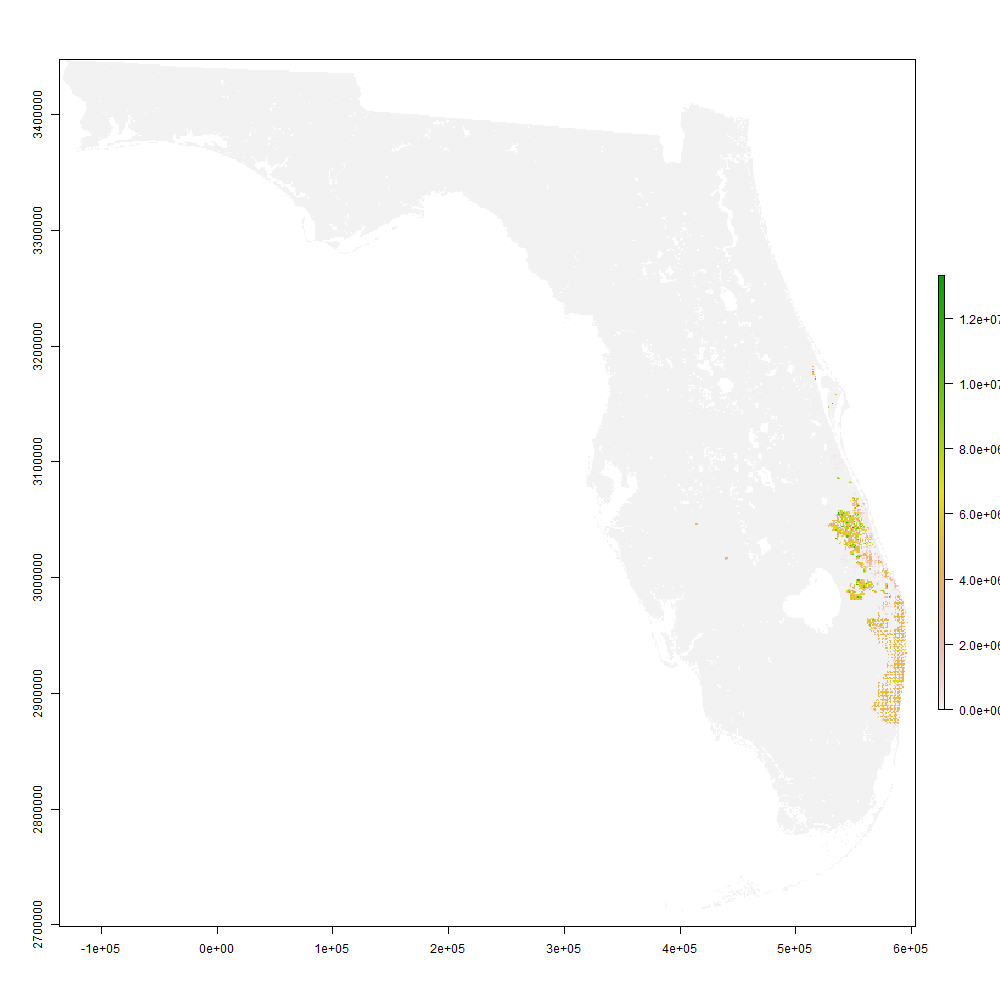

1 Multi-scale Stochastic Spread of HLB
The spread of huanglongbing (黃龍病) through the state of Florida was driven through a variety of (stochastic) processes whose influence was exerted on different spatial and temporal scales. In generating a cohesive model capable of faithfully explicating spread over large regions, we have to confront the challenge of modeling on these different scales simultaneously.
There are also practical issues of maintaining model parsimony and a general desire for computational efficiency. All of these factors have influenced our modeling decisions throughout development. Here we a highlight a few of the implementation choices and design features of our model.
Note: This page represents a work-in-progress. More details still to come.
2 Overview of Model
Timeline of observed events:
- Early 1998: Psyllids arrive to SW Florida (Palm Beach County) and begin dispersing along the urban corridor
- Early 1999: Psyllids continue dispersing urban corridor of SW Florida, reaching Homestead
- \(\leq\) 1999: Small number of CLas-positive plants arrive to Homestead
- Psyllids acquire CLas in Homestead
- Early 2000s: Widespread, statewide dispersal of uninfected psyllids; heavy infestation of commercial groves
- 2005: First observation of CLas in Florida
- 2009: Visible symptoms of infection and large blocks of citrus removed from production statewide
2.1 Spatial structure
Our assumed baseline spatial structure is a 0.25 \(\times\) 0.25 sq. mile grid overlaying the state. This is broadly partitioned into three classes of grid cells: (i) urban/developed areas containing host material, eg. citrus or orange jasmine hedges (habitable for psyllids),1 (ii) commercial citrus groves,2 (iii) areas containing no suitable host material for psyllids.
The model allows parameters to be general functions \(f(x,y)\) of grid location \((x,y)\), but for simplicity, we generally assume the parameters to only vary across the three types of cells described above.
2.2 Dispersal mechanisms
The model includes dispersal via several mechanisms, some of which we describe below.
2.2.1 Local Psyllid Movement
Local, short-range psyllid movement occurs naturally, both via flight and wind-assisted local migration. For this model, our primary interest in this local dispersal is to track the aggregate advance of the vector population and disease. Since statewide vector population is in the billions, we opt to implement this short-range movement using convolution with a local dispersal kernel. This has the added advantage of allowing us to use an optimized library (TensorFlow) to take advantage of GPU/hardware acceleration for the more “expensive” parts of the model.
mapdeck(zoom = 8, location = osmdata::getbb("ft. lauderdale,fl"), pitch = 45, bearing = 40) %>%
add_polygon(data =
uninf_sf[which(uninf_sf$lyr.1 > 1), ] %>% st_transform(crs = 4326) %>% dplyr::mutate(psy = log(lyr.1)),
elevation = "psy", fill_opacity = 120, update_view = FALSE, tooltip = "lyr.1", palette = "green2red", legend = TRUE)## Registered S3 method overwritten by 'jsonlite':
## method from
## print.json jsonify2.2.2 Sales of Plants
Statewide sales of infected/infested nursery stock in Homestead, FL appears to have played a role in establishment of both uninfected psyllid populations, and later, spread of infected psyllids. This form of transport allowed psyllids to rapidly traverse large distances.
For our implementation, we first fix a selection of \(\approx\) 200 retail stores from a historical sample of known locations. We then model sales of plants from Homestead nurseries to these retail stores, and from these stores to individual consumers around the state. The volume for these sales processes is assumed to be a function of the local population surrounding each store. For sales to individual consumers, we assume that the distribution of the final location of the plant is a decreasing function of distance to the store making the sale.3
2.2.3 Truck Dispersal
Large quantities of citrus are transported from commercial groves to bulk processing (juicing) facilities. Transport is via open trailers, from which psyllids can easily disperse en route. This is another important dispersal mechanism implemented in our model.
For both practical and computational reasons, we aggregate the grid to a lower resolution and threshold to generate a smaller set of harvesting locations (from which trucks are assumed to depart). We then extract routes from harvesting locations to processing plants using OpenStreetMap and osrm.
Each day, we determine active truck routes (based on a truck scheduled generated using citrus density), and sample these to generate dispersal locations. Here is an example:
mapview::mapview(sample)The points represent locations that psyllids would disperse to from some truck on a given day.

Historical data on the distribution of host material is unknown; thus we utilize a suitably chosen pseudo-random configuration overlaying known urban/developed regions.↩︎
Identified from NASS Cropscape historical data.↩︎
Customers may travel long distances after buying a plant, but this is not likely.↩︎